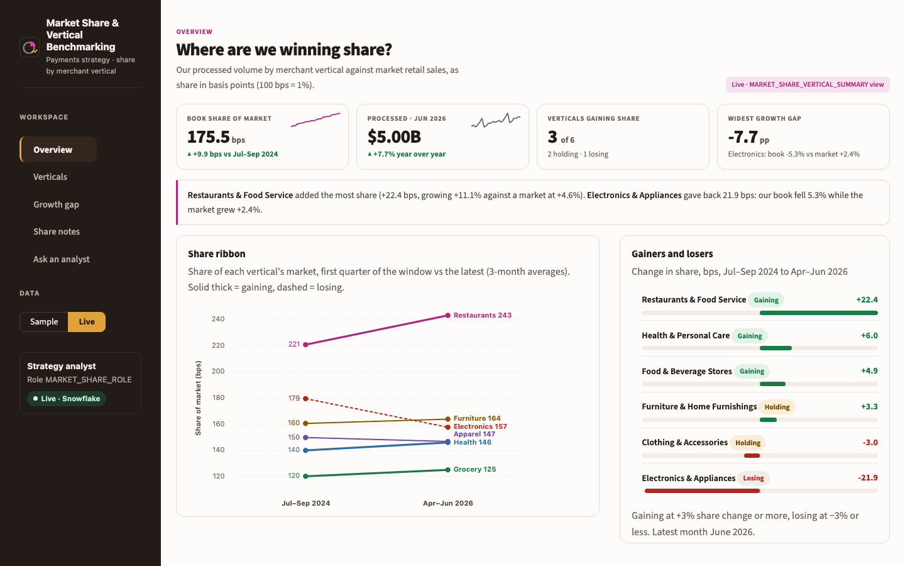
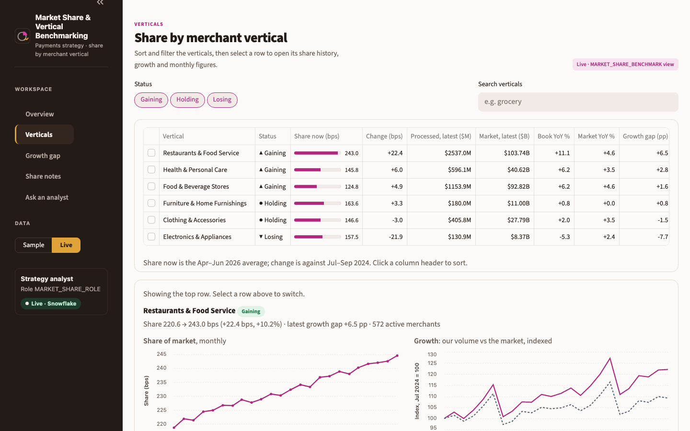
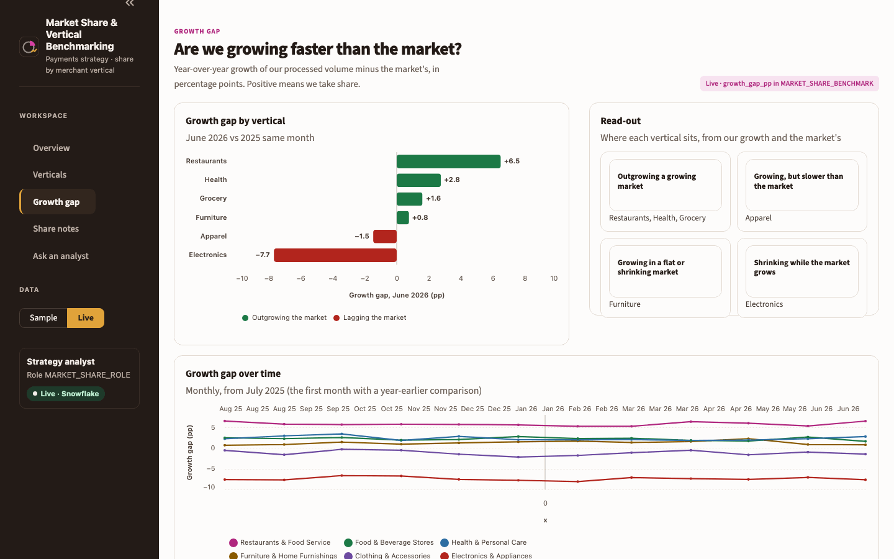
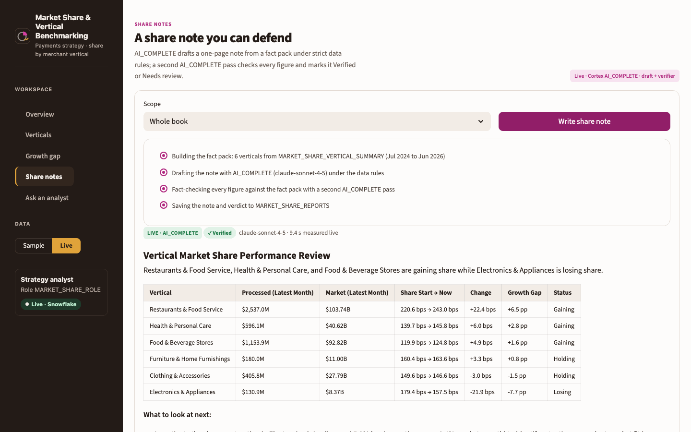
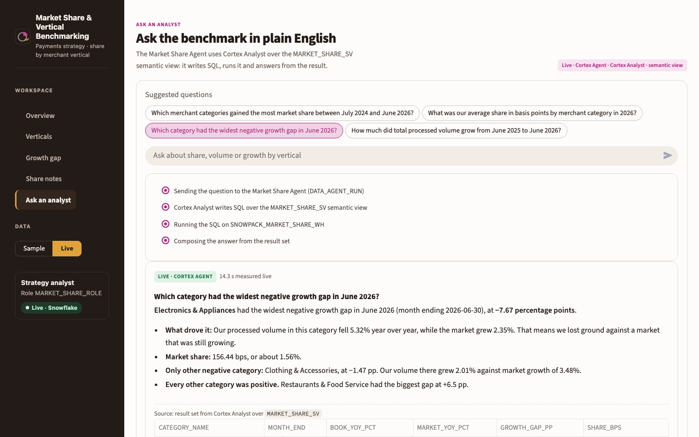

The problem
A strategy team at a payments processor sees its restaurant volume up 11% on the year. Good news, until the team asks how fast the restaurant market grew. Internal dashboards show your own trend, not your share of the market, so a vertical can look healthy while you lose ground in it. Here the Electronics book shrinks 5% while its market grows 2%: a share loss that a volume chart hides.
How it works
- 1
Benchmark view
A Snowflake view joins processed volume to market sales by category and month:
share_bps = volume / market × 10,000, plus year-over-year growth of each and the gap between them. - 2
Semantic view
MARKET_SHARE_SVgives the benchmark business names and metrics, so Cortex Analyst can turn a plain-English question into SQL. - 3
Grounded draft
Cortex
AI_COMPLETEwrites a share note from a fact pack of pre-formatted figures under strict rules: copy figures, no estimates, no outside numbers. - 4
Verifier
A second
AI_COMPLETEpass compares every figure with the fact pack and marks the note Verified or Needs review, with the claims it flagged.
What you get

MARKET_SHARE_VERTICAL_SUMMARY view.
MARKET_SHARE_BENCHMARK view.

AI_COMPLETE drafts the note and a second pass verifies it; notes are saved to MARKET_SHARE_REPORTS.
Snowflake capabilities used
| Capability | Where | What it does here |
|---|---|---|
| Views and window functions | Overview, Verticals, Growth gap | MARKET_SHARE_BENCHMARK computes share in bps and LAG-based YoY growth; MARKET_SHARE_VERTICAL_SUMMARY sets each vertical's status. |
| Semantic views | Ask an analyst | MARKET_SHARE_SV defines facts, dimensions and metrics over the benchmark. |
| Cortex Analyst + Cortex Agents | Ask an analyst | MARKET_SHARE_AGENT, called with DATA_AGENT_RUN, writes and runs SQL over the semantic view (14 to 26 s per question, measured). |
Cortex AI_COMPLETE | Share notes | Drafts the note, then verifies it (6 to 12 s for both calls, measured). |
| Streamlit in Snowflake | The app | The same Streamlit app runs locally with key-pair auth or inside Snowflake. |
| Marketplace listing (optional) | sql/setup_census.sql | Swaps the synthetic market for US Census Advance Retail Sales from a free listing. Not re-verified in this build. |
Try it, no account
The hosted example runs in your browser on the bundled synthetic data. AI responses are replayed from Live runs and labeled Sample AI response. Locally: pip install -r app/requirements.txt, then streamlit run app/streamlit_app.py.
Run it live
Needs a role that can create a database, warehouse and role, in a region with Cortex AI_COMPLETE and Cortex Agents. Run sql/setup.sql (about 15 s, well under 0.1 warehouse credit on XSMALL), then start the app with key-pair auth or deploy it as Streamlit in Snowflake. Each share note and each question adds Cortex token charges. Remove everything with sql/cleanup.sql.
export SNOWFLAKE_ACCOUNT=<org-account> export SNOWFLAKE_USER=<YOUR_USER> export SNOWFLAKE_PRIVATE_KEY_PATH=~/.snowflake/keys/<key>.p8 streamlit run app/streamlit_app.py